環境変数PATHを設定する
Python で提供されているプログラムをコマンドプロンプトから実行する場合、 PATH を設定しておくと便利です。ここでは PATH の設定方法について解説します。(インストール時に自動で PATH を設定するようにチェックしていた場合には不要です)。
PATHを設定する
Python で記述したプログラムを実行する時に必要となる python.exe は Python をインストールしたディレクトリに保存されています。
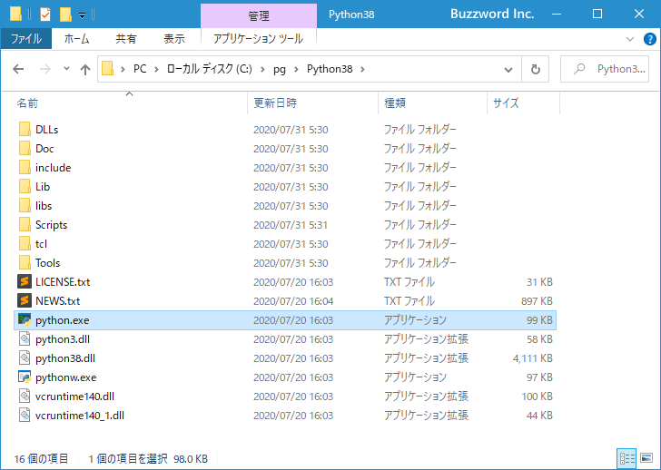
任意のディレクトリから python.exe を実行するには、 python.exe が保存されているディレクトリへ PAHT を設定しておきます。今回は Python を C:\pg\Python38 ディレクトリにインストールしていますので、このディレクトリを PATH に追加します。
※ なおインストーラーで Python をインストールした時に Add Python 3.8 to PATH にチェックをしていた場合には自動的に PATH が設定されていますので追加で設定は不要です。
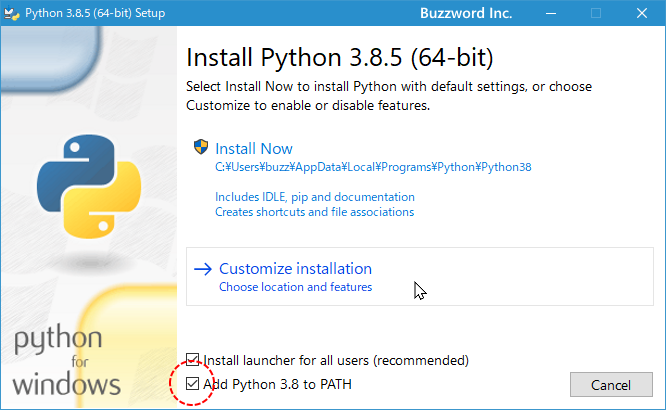
それでは PATH を設定します。今回は Windows10 の環境で設定してみます。デスクトップ左下にあるスタートメニューをクリックし、表示されたアプリの一覧の「Windowsシステムツール」をクリックします。
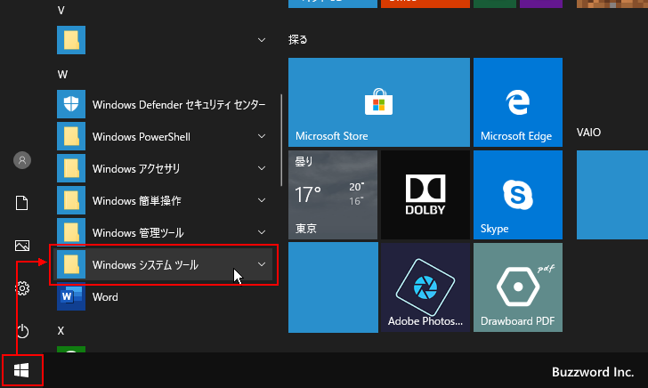
表示された中から「コントロールパネル」をクリックして下さい。
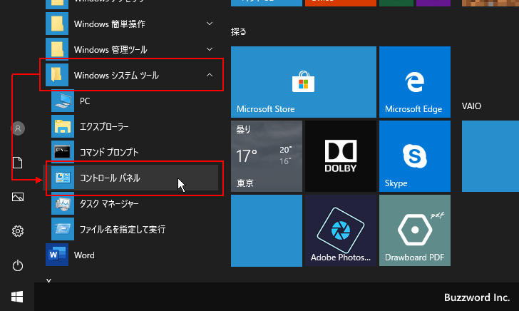
「コントロールパネル」が表示されたら「システムとセキュリティ」をクリックして下さい。
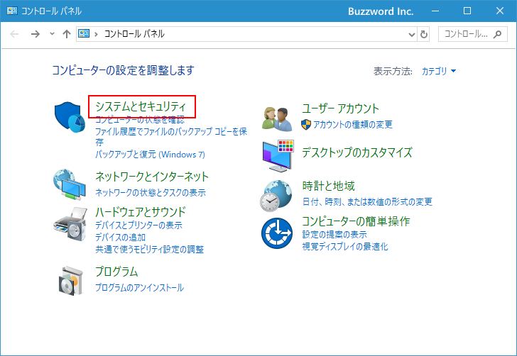
次の画面で「システム」をクリックして下さい。
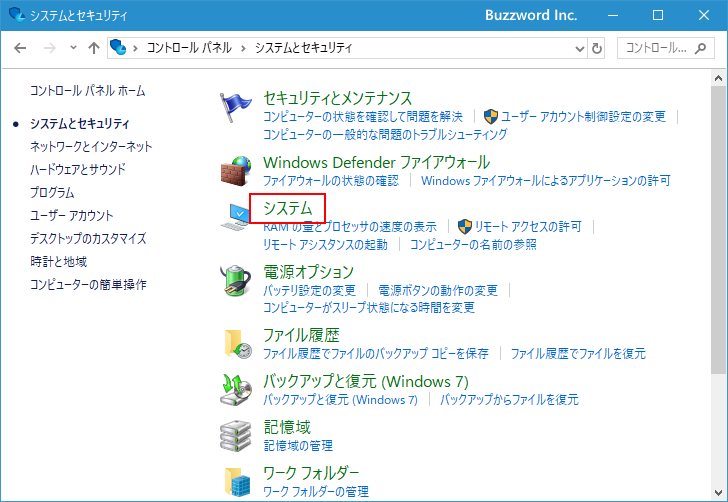
「システム」画面が表示されましたら左側メニューの中の「システムの詳細設定」をクリックして下さい。
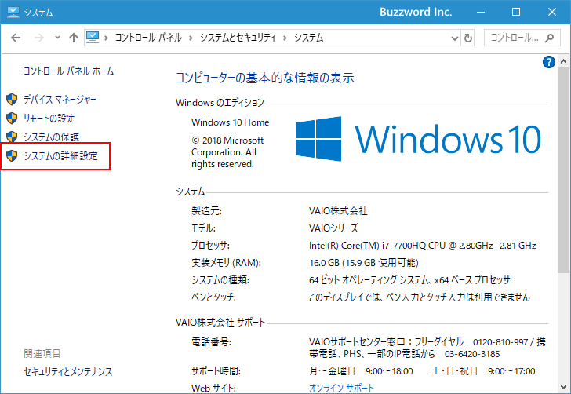
「システムのプロパティ」画面が表示されます。「環境変数」をクリックして下さい。
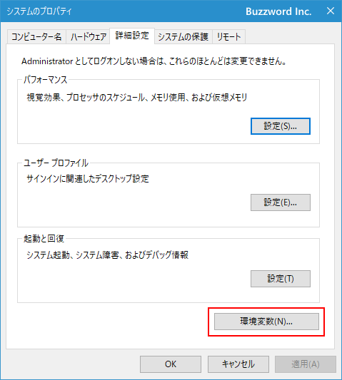
「環境変数」の画面が表示されます。この画面でPATHの設定を行います。
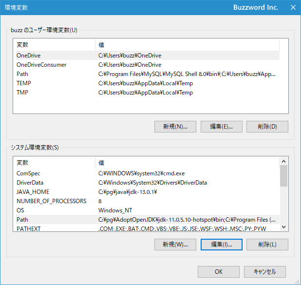
システム環境変数の中で「変数」が「Path」と書かれたものを探してください。見つかった場合には「Path」と書かれた箇所を一度クリックして選択してから「編集」ボタンをクリックして下さい。
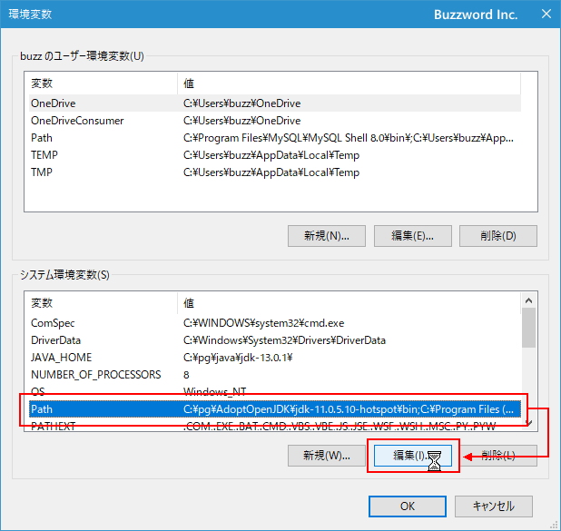
「環境変数名の編集」画面が表示されます。
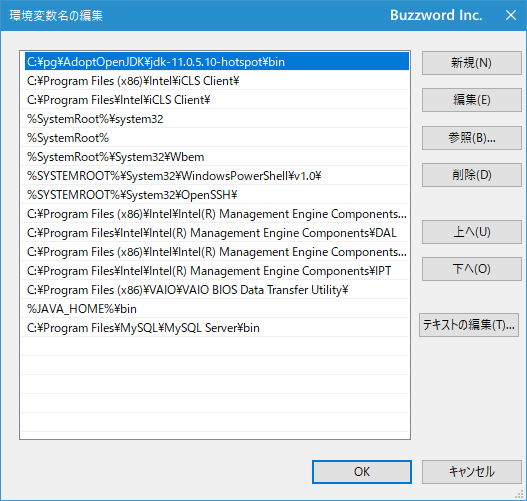
右上の「新規」をクリックすると左側の一覧の最後に新しい項目を追加できるようになりますので C:\pg\Python38\ と入力して下さい(ご自身が Python をインストールしたディレクトリに合わせて入力して下さい)。入力が終わったら「OK」をクリックして下さい。
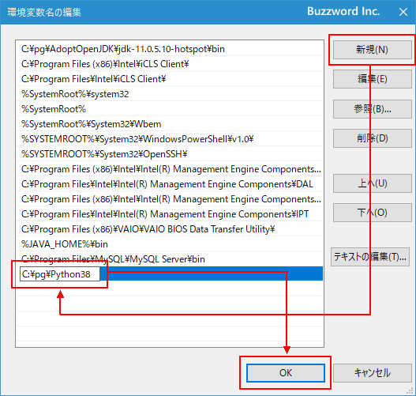
また Python で利用できるパッケージのインストールを行う時に使用する pip.exe ファイルは Python をインストールしたディレクトリの中の Scripts ディレクトリの中に保存されています(インストール時に pip を合わせてインストールするように指定した場合です)。
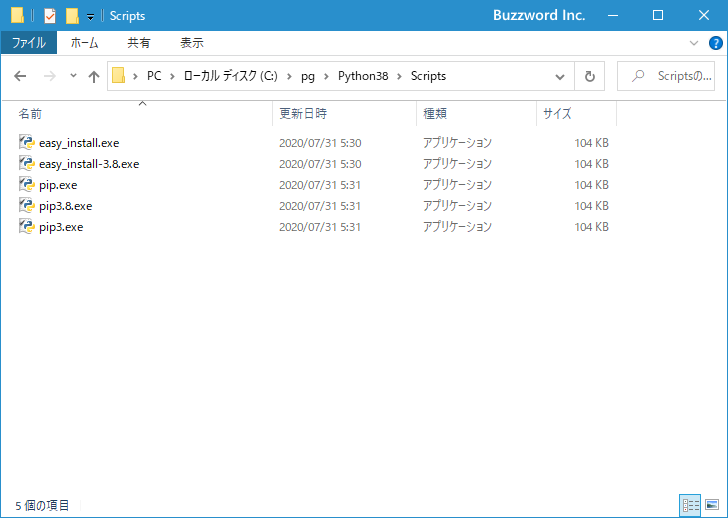
pip.exe があるディレクトリも PATH に追加しておきます。先ほどと同じ手順で PATH を追加してください。追加が終わりましたら「OK」をクリックしてください。
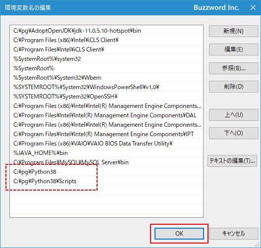
最後に「OK」をクリックして下さい。
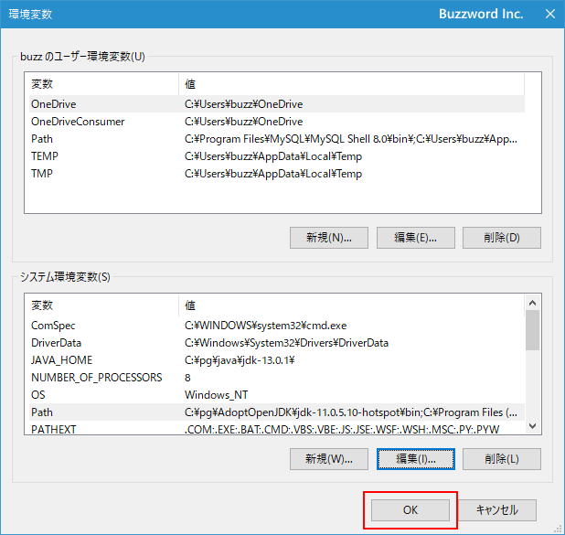
これで Python で使用するプログラムが保存されているディレクトリを PATH に追加することができました。
PATHが正常に設定されたか確認する
それでは PATH が正常に設定されたかどうかを確認します。コマンドプロンプトを起動してください。
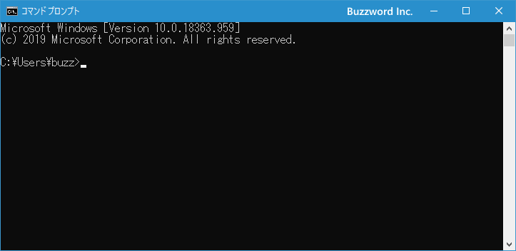
次のように入力して実行してください。( -V は大文字です)
python -V
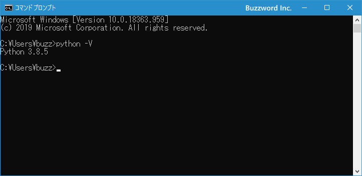
このように Python のバージョンが表示されれば PATH は正常に設定されています。
続いて次のように入力して実行してください。( -V は大文字です)
pip -V
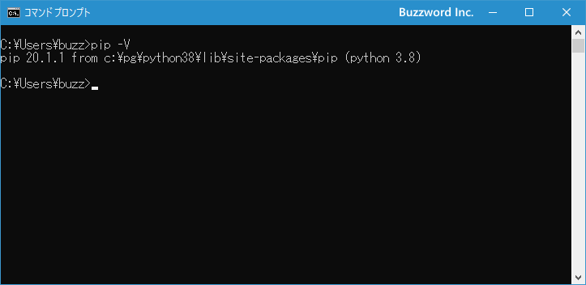
このように pip のバージョンが表示されれば Scripts ディレクトリへの PATH も正常に設定されています。
-- --
Python で使用するディレクトリを PATH に追加する方法を解説しました。
( Written by Tatsuo Ikura )

著者 / TATSUO IKURA
初心者～中級者の方を対象としたプログラミング方法や開発環境の構築の解説を行うサイトの運営を行っています。